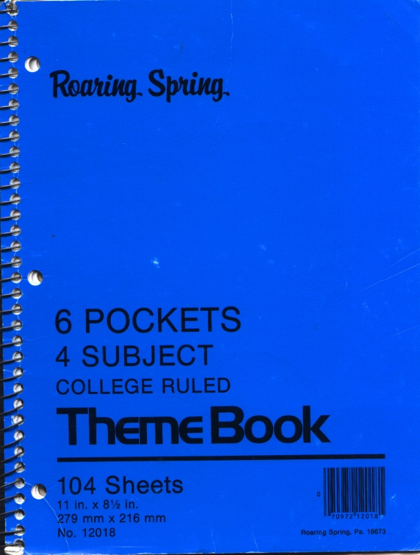
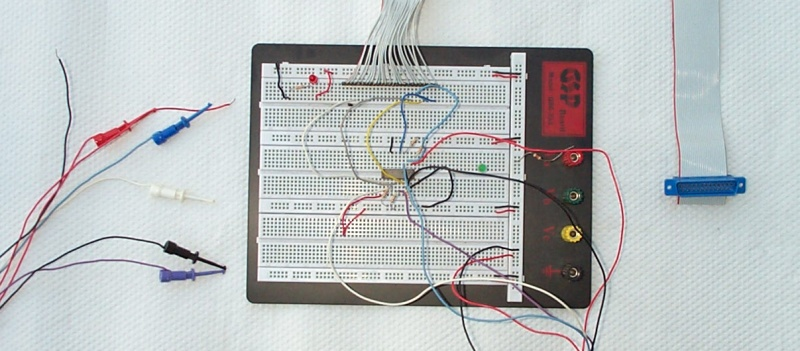
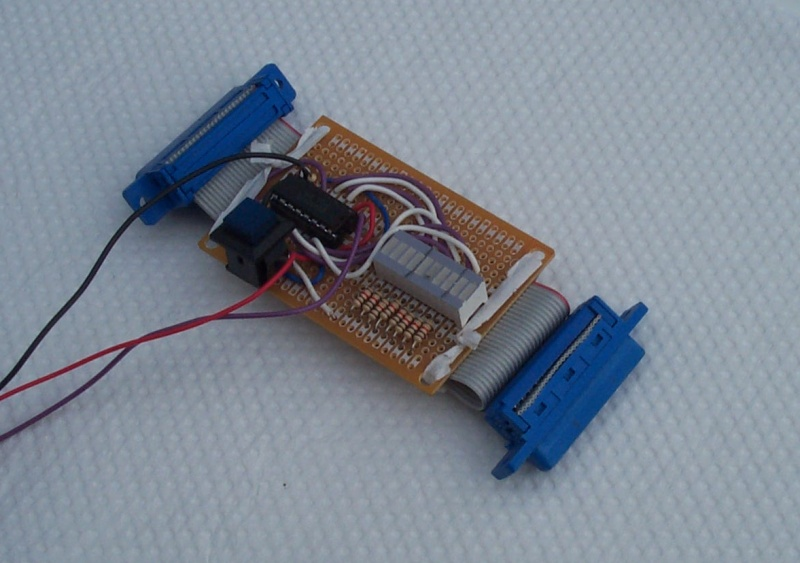
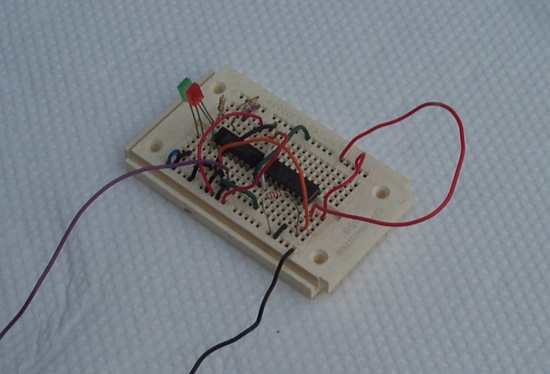

What We Learned
First of all, we learned the value of documentation and tools for debugging and development. As software engineers, we already had a fair grasp on how useful some design up front and a development journal are.
As we invented boards and worked out details, we kept a written record in a spiral-bound notebook. Some scans from the notebook are included in other pages on this web site. This gave us a sense of continuity because we could look back at decisions we had made. It also gave us a written archive of board designs for debugging and helped us ensure new boards were compatible with the old ones. We referred to this notebook again and again over the years we worked on Alice II.
We spent a lot of time discussing design and bugs over meals, like chicken strips and a chocolate shake at Denny's or over Pizza Hut pizza. We believe thinking about and discussing what to do next is critical for a successful development project. Research is also valuable. Discovering the MicroChip PIC 16Cxx series gave us more options for communications and peripheral control. Without it we would have built a complicated dedicated circuit for keyboard I/O and would have had to include a separate UART for serial.
Building prototypes is another very useful technique for maximizing your investment in time. It seems like a pain at first, but with a prototype in hand, you can tweak and quickly test fixes that would later require building a second printed circuit. We used large prototyping breadboards for our experiments and found them quite useful. Building breadboard versions of each of our cards in turn also buoyed our morale by allowing us to quickly verify that we had correctly guessed and learned the knowledge we were seeking.
Debugging tools are absolutely worth the time you spend finding or building them. Over the course of developing Alice II, we built a debug output board for the main bus, used a second-hand oscilloscope, built a binary counter with a probe, built a latching LED with a probe, and built a parallel port logic analyzer. Using these tools allowed us to track down and fix problems that were otherwise intractable, but the confidence granted by our success with our tools was also important.
Parallel Port 5-Probe Logic Analyzer:
Binary Counter:
Logic Probe
If you are a software engineer, do not assume analog electronics work the way you expect! (Better yet, do not get involved in analog electronics.) We spent many agonizing days trying to fix darkness and noise and flakiness in our video board. We consulted Lawrence's Dad, a professional electronics engineer, and his advice was to liberally sprinkle capacitors all over the place. To a software engineer, this seems like a bad hack at best, like “just put in more printfs and maybe the crash will go away.” But we put two big capacitors across the biggest current draining chips on the video board and, lo and behold, our problems went away. It turned out (apparently) that those chips were switching very rapidly and sucked down a lot of current on each switch, starving the other circuits on the board. Putting capacitors near them gave them a sort of private reserve of current for these expensive switches.
We used programs to aid design whenever possible. We used tgif to design our circuit boards. We could have manually traced each board with black trace tape, but it was very useful to be able to just print out a new board whenever we made a change. We wrote scripts for extracting different colored layers from the line art files. We wrote scripts for setting up the PC serial port, resizing and packing images and downloading binary files, and augmented the Z-80 compiler with the GNU C preprocessor.
It's easy to over-design. For example, we put an 8259 interrupt controller on the CPU board, and the resulting botched design probably added six months of debugging to the project. The PIC chip on the I/O board interrupted the CPU on a single IRQ line and used a protocol to specify which device was interrupting (keyboard, serial, or timer), so the 8259 wasn't even used for anything. We should have simplified the design by not putting an 8259—we just did it because other Z-80 computers had, not because we had foreseen a use for it. Keep it simple!
Finally, having two people working on the project was a big advantage. We repeatedly encountered huge obstacles, and usually one or the other of us would state that maybe we should just quit working on the project altogether. If the other person had agreed, the Alice II project would have ended long ago. Instead, we managed to balance out most of the time, so having at least one person motivated to complete the project at any given time was extremely helpful.